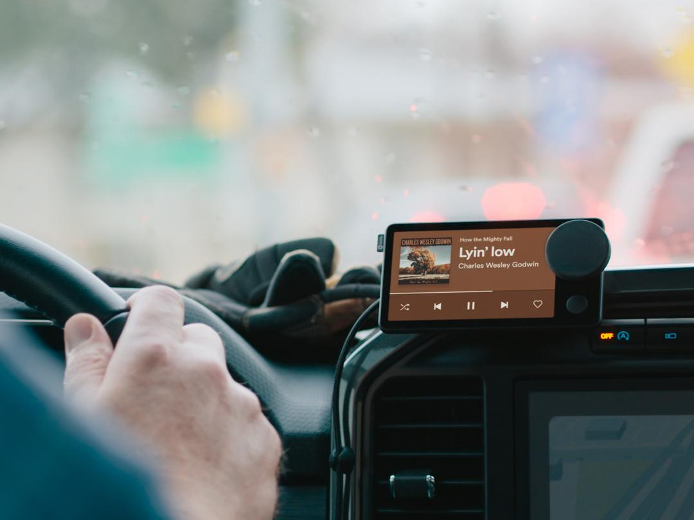
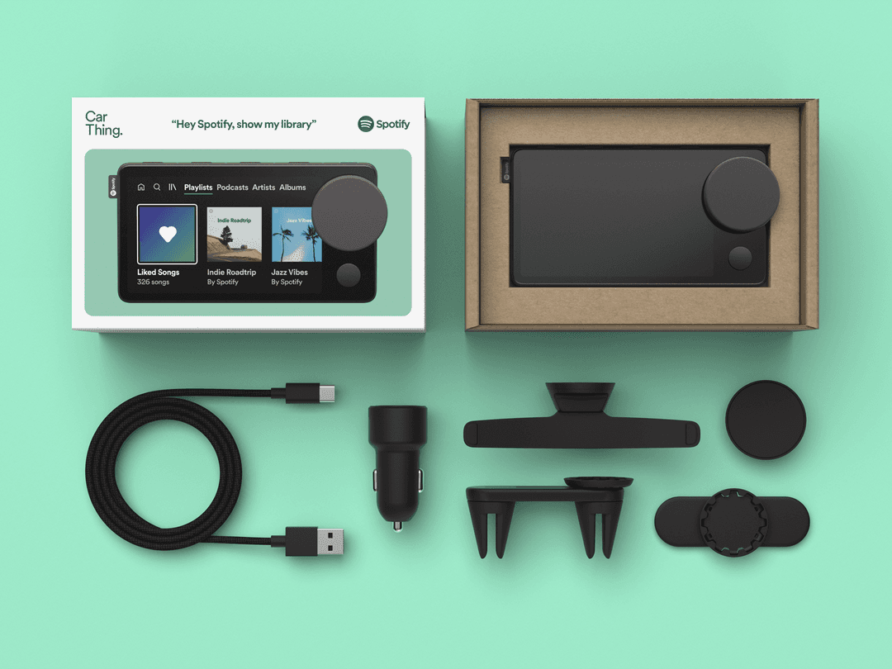

Car thing
¿Qué es el Spotify Car Thing?
Spotify car thing facilita la capacidad de escuchar su música favorita en su vehículo. Podrá conectar este dispositivo a un vehículo y así tener una mejor experiencia escuchando música en su vehículo.
Como Funciona
A continuación le mostraremos lo fácil que es hacer funcionar el Spotify Thing en tres sencillos pasos.
- Conecte Car Thing a corriente.
- Conecte su teléfono a Car Thing.
- Conecte su teléfono al stereo de su coche.
Use el cable y el adaptador de corriente al dispositivo y a una toma de corriente de 12V.
Conecte su teléfono a Car Thing mediante los ajustes Bluetooth del primero.
Conecte su telefono con su coche mediante los ajustes Bluetooth, AUX o cable USB.
Accesorios
El Spotify Car Thing incluye todos los accesorios necesarios para poder utilizarlo de la forma que más se adapte a su vehículo.
Contiene:
- Car Thing
- Cable USB-C
- Adaptador de corriente
- Soporte magnético
- Soporte de ventilación
- Soporte de CD
- Soporte de salpicadero
Funciones Clave
Spotify Car Thing cuenta con todo tipo de funciones que facilitan su uso. Destacan las siguientes:
| Funciones | Descipción |
|---|---|
| ¡Gíralo! | Usa la rueda para buscar, seleccionar, reproducir, pausar y descubrir |
| ¡Háblale! | Digale “Hey Spotify” luego pídale una canción, album, artista, playlist, estación, o podcast |
| ¡Míralo! | La pantalla muestra qué está sonando, lo próximo, e interactuar de manera táctil |
| ¡Púlsalo! | Cuatro botones con presets le otorgan acceso rápido a sus artistas favoritos, playlists, estaciones, y podcasts |